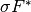
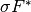
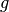
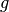

proximal_convex_conj_l1¶
- odl.solvers.nonsmooth.proximal_operators.proximal_convex_conj_l1(space, lam=1, g=None)[source]¶
Proximal operator factory of the L1 norm/distance convex conjugate.
Implements the proximal operator of the convex conjugate of the functional
F(x) = lam ||x - g||_1
with
xandgelements inspace, and scaling factorlam.- Parameters:
- space
LinearSpaceorProductSpaceofLinearSpacespaces Domain of the functional F
- lampositive float, optional
Scaling factor or regularization parameter.
- g
spaceelement, optional Element to which the L1 distance is taken. Default:
space.zero.
- space
- Returns:
- prox_factoryfunction
Factory for the proximal operator to be initialized.
See also
proximal_convex_conj_l1_l2isotropic variant for vector-valued functions
proximal_l1proximal without convex conjugate
Notes
The convex conjugate
 of the functional
of the functionalis in the case of scalar-valued functions given by
where is the indicator function of the unit ball with respect to
 .
For vector-valued functions, the convex conjugate is
.
For vector-valued functions, the convex conjugate isdue to separability of the (non-isotropic) 1-norm.
For a step size
 , the proximal operator of
 is given by
, the proximal operator of
 is given byHere, all operations are to be read pointwise.
For vector-valued
 and , the (non-isotropic) proximal
operator is the component-wise scalar proximal:
and , the (non-isotropic) proximal
operator is the component-wise scalar proximal:where
 is the number of components of .
is the number of components of .